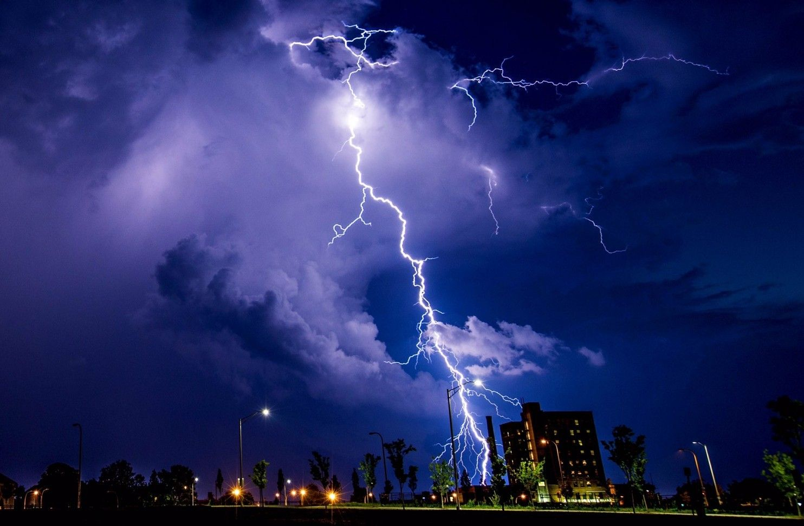

Experiments show that light displays both wave-like and particle-like behavior, a key idea in quantum physics.
Light can behave like a wave and a particle
Light has a remarkable dual nature.

Source: Quantum physics
Light has a remarkable dual nature.

Experiments show that light displays both wave-like and particle-like behavior, a key idea in quantum physics.